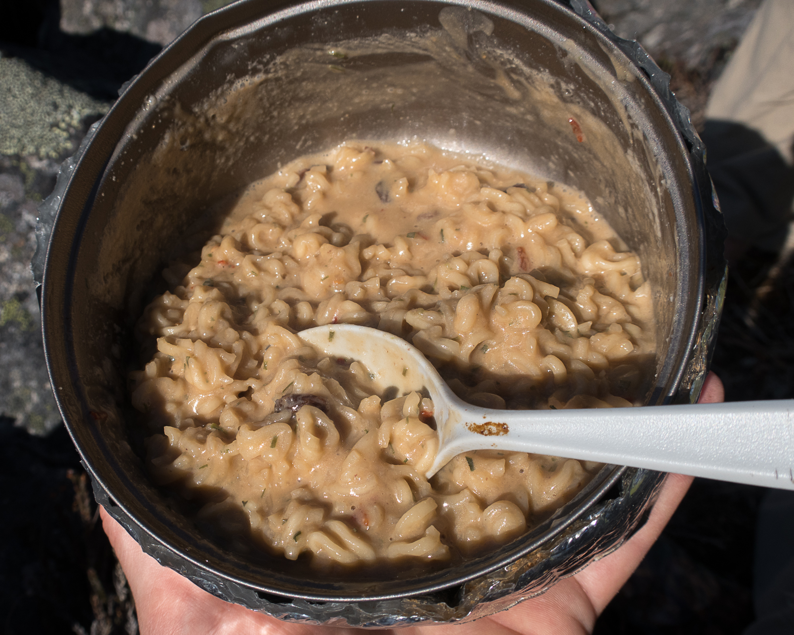

Thru Hiker Pad Thai

The most delicious backpacking meal for those who want something quick after long miles!
This backcountry pad thai recipe is meant to be enjoyed after a really long day on the trail. Many hikers commonly agree that anything tastes good after a long hike, and this pad thai recipe for backpacking will really put that claim to the test!
This cheap and easy backpacking recipe is obtainable by just about anybody. All you need are a few simple ingredients, a camping stove and an open mind!
Backcountry pad thai ingredients.
- Ramen noodle package
- Crunchy peanut butter
- Low sodium soy sauce
- Summer sausage (optional)
Instructions for making backcountry pad thai.
- Use your camping stove to bring water to a boil.
- Chop sausage into small squares if desired while waiting for the water to boil.
- Add the ramen noodles and sausage to the water once boiling and cook to desired softness.
- Once cooked, drain the liquid from the ramen noodles and add any included seasonings.
- Stir in a dollop of crunchy peanut butter.
- Add soy sauce to taste.
- Enjoy!
Back to Home